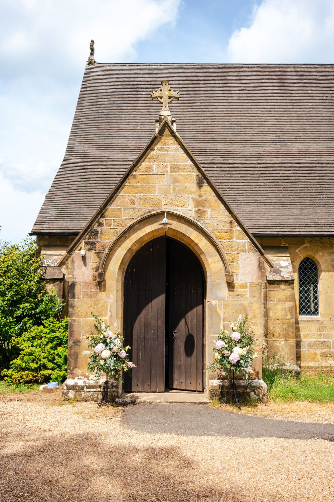

Church of England · East Sussex
Three churches, one family
Welcome to the benefice of Burwash, Burwash Weald and Etchingham. Whoever you are, you're welcome here.
Our churches
We follow a monthly cycle of services across all three churches. Families and children are welcome at any of them.

Burwash
St Bartholomew's
At the heart of the village, looking out over the Dudwell Valley.

Burwash Weald
St Philip's
A peaceful spot on Stonegate Road, opposite the Burwash Weald pavilion.

Etchingham
The Assumption of Blessed Mary & St Nicholas
A Grade I listed church beside the railway station.
Life's big moments
We'd be glad to help you mark the important moments of life in one of our churches.
Baptism
Welcoming a child, or yourself, into the family of the Church.
Weddings
Making your vows in a place of prayer, surrounded by your community.
Funerals
Space for grief and gratitude as we commend a loved one to God.
Get involved
Choir
Rehearsals on Fridays at 6pm. New voices of every age are welcome.
Bellringing
Practice on Tuesdays at 7.30pm. Beginners are welcome, and training is provided.
Wednesday Club
Messy church for primary-age children, midweek in Burwash.